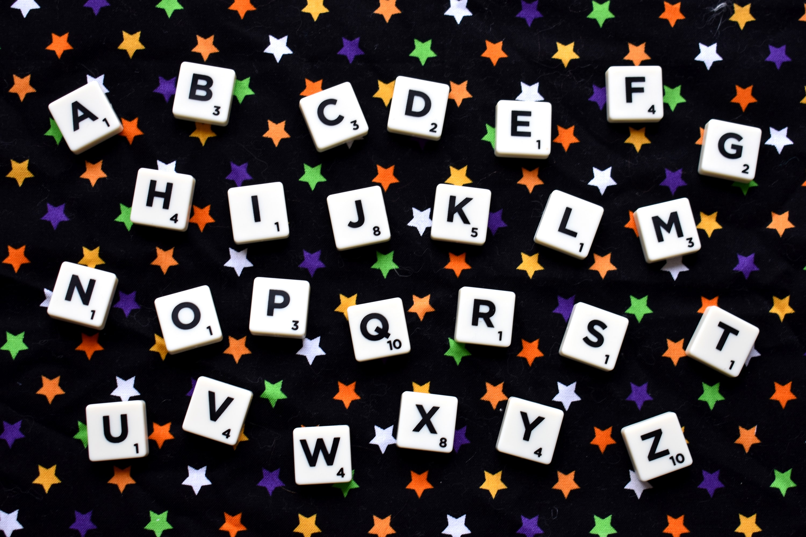

상세
한글은 음소를 표기하는 문자이면서도, 음절 단위로 모아 쓰는 독특한 방식을 채택한다. 따라서 일종의 음절 문자의 효과도 보는 것이다. 바로 이 점 때문에 한국어 끝말잇기가 실질적으로 성립한다.
끝말잇기를 제대로 하려면 일단 한방단어를 섭렵하고 중요단어들을 상당수 암기하고 있어야 한다. 그 이유와 끝말잇기에 관한 여러 개념들은 밑에서 자세히 서술한다.
밑에서 설명하는 모든 정보는 두 사람이 끝말잇기를 하는 경우(1대1 끝말잇기)로 설명한다. 생각하기에 따라서는 너무 당연한 것을 얘기한다고 할지 모르지만, 세 명 이상의 사람이 같이 끝말잇기를 하는
경우[1]도 충분히 많을 뿐만 아니라, 이에 관해서 자세한 설명이 이어지므로 참고로 적어놓는 것이다. 이하의 중요한 개념들은 모두 1대1 끝말잇기에서만 성립하는 것들이기 때문이기도 하다.
이 끝말잇기라는 게임이 가장 기본인데, 여기에서 변형된 앞말잇기, 가운뎃말잇기라는 파생 규칙도 있다. 거의 모든 사람들이 알고 있는 끝말잇기에 비해서 인지도가 그리 높지 않다.

규칙
원칙적으로 표준어 내의 명사만 사용해야 한다. 이는 동사[2]나 목적어 및 구절 등을 허용할 경우, 끝나지 않는 헬게이트[3]가 열리게 되기 때문. 경우에 따라서는 띄어쓰기, 지명[4], 인명[5],
외래어[6], 옛말[7], 두음법칙, 서브컬쳐 내 고유명사, 전문어(학명 포함), 분자 및 원소명[8]을 허용하지 않는 경우도 있으며, 표준국어대사전에 있는 단어만 인정하는 경우도 있다.
사용할 수 있는 단어의 범위를 표준어에만 한정하지 않고, 북한어, 방언, 옛말 또는 의존명사, 대명사, 수사까지 사용하는 규칙도 있다. 심지어는 네이버 지식백과나 두산백과에 있는 단어를 사용하는 룰도
있다... 이러면 얼른 생각하기엔 막장에다가 순 억지, 한도 끝도 없어서 노잼이라는 의견이 지배적일 것이다. 하지만 그것은 끝말잇기를 제대로 해보지 못하여 그런 생각을 하는 것이며, 다양한 바리에이션을
적용해도 밑에서 설명하는 '죽지 않는 글자'들이라든지 한방단어들의 큰 시스템이 어느 정도 바뀔 뿐, 충분히 재미있을 수 있다.
일반적으로 한 글자 단어는 사용하지 못하며, 한 판에 같은 단어를 두 번 이상 사용할 수 없다. 허용할 경우 박수 수학 학생 생...이라든지 박수 수박 박수 수박... 따위로 게임의 재미가 없어지기
때문이라는 것은 물론 당연한 사실이다. (기러기러기러기러기...)
국내 지역룰로 잘 쓰이는 것이, ㄹ이나 ㄴ으로 시작할 때 두음법칙을 인정하는 것. '이스랒'[9]이 제시된 경우 '낮'으로도 이을 수 있게 하는 것이다. 참여자 모두가 알고 있는 경우[10]가 아니면
인명과 지명 등의 고유명사는 보통 사용이 제한된다. 이를 악용하여 알고 있는데도 모른다고 해버리는 경우도 있다... '도쿄'같이 아주 상식적인 것은 이런 방법이 통하지 않으므로 적당히 모를 만한 단어가
나왔을 때 이러는 사람이 간혹 있다.[11]
한방단어를 봉쇄하는 룰으로서, 다음 사람이 못 이으면 마지막 단어를 낸 사람이 이어갈 말을 스스로 제시하게 해서, 못 이으면 마지막 단어를 낸 사람이 진 걸로 하는 룰도 있다.
말도 안 되는 단어를 만들어 내는 룰도 있다. 일반적인 끝말잇기와는 정반대로 사전에 수록되어 있는 낱말을 말하면 지는 것. 사전에 없더라도 어쨌든 말이 되기만 하면 진다. 1박 2일에서 쿵쿵따의
변종으로 나온 바 있었는데 온갖 상상력을 동반해야 한다.[12] 다만 이 경우는 마지막 음절을 수십 번 이상 반복하는 식으로 하면 비교적 쉽게 진행할 수 있다.
이분들의 룰도 있다. 대표적 명칭은 문과식 끝말잇기.[13] 일반적인 끝말잇기와 룰은 대부분 비슷하지만 스토리 텔링[14]처럼 문장으로 이어가야 한다는 점이 있다. 세부적인 점은 다양하게 차이가
나겠지만 대부분 이과스러운 문장, 한 문장 초과, 이야기 흐름에 어긋나는 문장은 탈락으로 둔다.
글자 수(음절 수)를 제한하는 룰도 있다. 대표적인 게 위에서 말한 쿵쿵따(3글자 제한). 몇 글자 이상만 가능한 변칙도 있다. 그 외에도 2-3-2-3 같이 특정 음절 수를 번갈아 말해야 하는 등의,
각종 바리에이션도 만들어내기만 한다면 얼마든지 무궁무진하게 만들어낼 수 있다. 또 특정 주제에서만 단어선택이 가능한 룰도 있는데 동물 이름, 식물 이름으로만 단어를 제시할 수 있는 식이다.
단어를 이을 땐 회문 단어를 쓰든, 첫글자와 다른 글자로 끝나는 단어를 쓰든, 사전에 합의한 룰에 문제만 없다면 어떤 단어로 골라 잇느냐는 각자의 자유지만, 의존명사를 의존명사만 그냥 쓰는 따위는 거의
모든 룰에서 금지되는 편이다.
종종 정신나간 이들은 자체적 끝말잇기 사전(...)을 만들어 그 안에 있는 단어만 쓰게 하는 경우도 있다